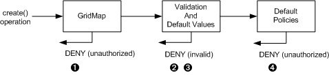
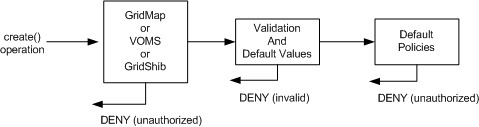
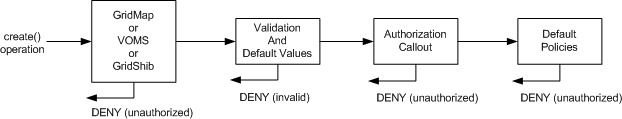

If the request is asking for network allocations and there are not
enough, the request will be denied and a
WorkspaceResourceRequestDeniedFault will be returned.
If the request is asking for network allocations and there are not
enough, the request will be denied and a
WorkspaceResourceRequestDeniedFault will be returned.
The Creation process in the workspace service makes an optional callout to authorize the request further than the basics.
NOTE: (see the end of this page for an overview of Nimbus authorization flow)
The basics are authorized by an implementation of this interface: org.globus.workspace.service.binding.GlobalPolicies
Source code: service/service/java/source/src/org/globus/workspace/service/binding/
Activated by way of the $GLOBUS_LOCATION/etc/nimbus/workspace-service/other/main.xml file -- see the "nimbus-rm.service.binding.GlobalPolicies" Spring bean.
If configured, further authorization can be done by an implementation of this interface: org.globus.workspace.service.binding.authorization.CreationAuthorizationCallout
Source code: service/service/java/source/src/org/globus/workspace/service/binding/authorization/
Activated by way of the $GLOBUS_LOCATION/etc/nimbus/workspace-service/other/main.xml file -- see the "nimbus-rm.service.binding.Authorize" Spring bean.
org.globus.workspace.service.binding.defaults.DefaultGlobalPolicies
Source code: service/service/java/source/src/org/globus/workspace/service/binding/defaults/
(there is no default CreationAuthorizationCallout, it is optional)
One implementation of CreationAuthorizationCallout is the groupauthz plugin.
The plugin can enforce the following policies. The request data to check is determined on a per-request, per-client basis. The limits are defined on a per group basis (every caller identity must be a part of a group).
Each policy can be set to disabled/infinite for specific groups if you desire.
We also distribute a Python based authorization plugin that allows an administrator to provide only a simple Python script to express policies (using the "Jython" library).
This plugin is compatible with both VOMS and GridShib attribute based authorization if either is enabled to protect the factory service create operation in the GT4 configuration.
Understanding the authorization possibilities requires some understanding of the factory service's create process, so the explanation below includes extra information that is not authorization related per se.
The default installation is configured with gridmap authorization, a DN access control list, that allows only clients in the gridmap file to call the factory create operation.
The request is then validated and default values are filled in if not supplied by the client. This is also where network addresses are leased if necessary.
If the request is asking for network allocations and there are not
enough, the request will be denied and a
WorkspaceResourceRequestDeniedFault will be returned.
Then the request is compared against the master policies configured in the factory.
 A violation will cause a WorkspaceResourceRequestDeniedFault to be
returned.
A violation will cause a WorkspaceResourceRequestDeniedFault to be
returned.

The VOMS and GridShib modules run before the Workspace Factory Service is ever invoked, just like the gridmap authorization:

As mentioned above there is a plugin interface for creation time authorization. All relevant information about the request is passed to the plugin including client identity and attributes (if available) as well as the workspace description and resource request. The callout to this plugin occurs after the validation process:

The supplied Python based plugin allows an administrator to configure a much richer policy than the factory policies allow for. For example, any arbitrary combination of resource allocation request (such as RAM), network settings, deployment duration, client DN, and client attributes can be taken into account.
This implementation of the authorization callout can present both VOMS credentials and SAML attributes (via GridShib) to the policy evaluation. But before they can be consulted, the "PIP" (Policy Information Point) portion of those modules must be configured. The PIP is what collects the attributes, the PDP (Policy Decision Point) is what enforces policy. This distinction is being mentioned because the PIP can be configured without the PDP in the VOMS and GridShib packages. Bear in mind that this might be an option if you are using the workspace authorization callout and want to handle all attribute policy there instead of before the factory service which is when the VOMS and GridShib modules are run. Thus, the PIP modules can collect the attributes about the client and then the detailed policy about those attributes can be expressed in the workspace creation time authorization callout.
In all cases, after the default policy check succeeds, the request is currently passed next to the scheduling/resource management plugin where problems will also lead to a WorkspaceResourceRequestDeniedFault.
After scheduling succeeds, the only thing stopping success at this point is an internal error (for example, a database connection problem).
Note: Once deployed, a workspace can be managed and inspected via Workspace Service or Workspace Group Service operations. Also, destruction may be run when using groups of groups, Workspace Ensemble Service.
Currently, no matter what authorization scheme is in use, once a workspace (or group of them) is deployed, al lof these operations are protected by a DN access control list consisting of the creator DN. Only the deployer can remotely manage or inspect the workspace.